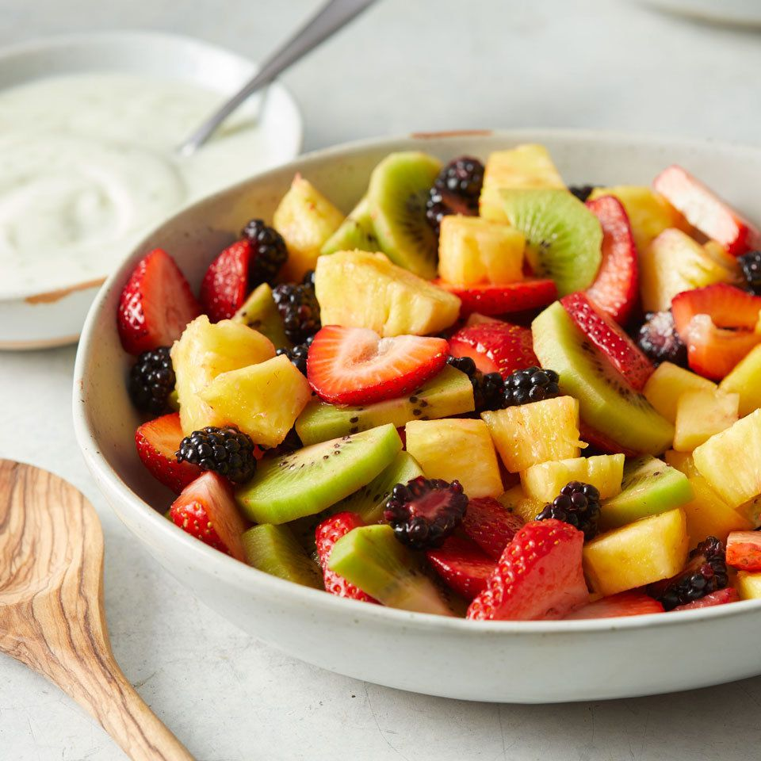

Fruit Salad
Back to menu
This fruit salad is perfect for a backyard bbq or any occasion. There are never leftovers! This is one of my favorite fruit salad recipes, as I think the citrusy sauce really makes it. This salad is tastier the longer you can let it soak in its juices. I prefer 3 to 4 hours in the refrigerator before I serve it.

Prep time: 25min
Cook time: 5min
Aditional time: 3hrs
Total time: 3.30hrs
Servings: 10 aprox
How To Make Fruit Salad
You'll find a detailed ingredient list and step-by-step instructions in the recipe below, but let's go over the basics:
Fruit Salad Ingredients:
- For the sauce: fresh orange and lemon juices, brown sugar, grated orange and lemon zests, and vanilla extract
- The fruit you'll need: pineapple, strawberries, kiwis, bananas, oranges, grapes, and blueberries
- Note: Of course, this is a super customizable recipe — you can omit certain fruits or add other fruits to suit your
taste and what you have on hand!
Directios
- Step 1: For the sauce: Bring orange juice, lemon juice, brown sugar, orange zest, and lemon zest to a boil in a saucepan over medium-high heat. Reduce heat to medium-low and simmer until slightly thickened, about 5 minutes. Remove from heat and stir in vanilla extract. Set aside to cool.
- Step 2: For the salad: Layer fruit in a large, clear glass bowl in this order: pineapple, strawberries, kiwi fruit, bananas,
oranges, grapes, and blueberries. Pour cooled sauce over fruit; cover and refrigerate for 3 to 4 hours before serving.